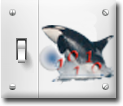

Preferences



ORCA has a number of general options that can be configured via the preference dialog. Open preferences by clicking on the preferences icon in the main dialog tool bar or select the Orca->Preferences... main menu item.
Open the Start-up preferences
Either open ORCA with the last configuration used or start with an untitled new configuration.
Enable/Disable bug reporting. If enabled and ORCA crashes, the crash dump will be mailed to everyone in the mail list the next time that ORCA is restarted.

Either open new dialogs using existing open dialogs of the same type or always open a new dialog.
Start-up
Appearance
Open the Appearance preferences
Set the background color of the main configuration window. Note--also affect the background color of other main container windows (i.e. process control window)
Set the color of the lines that connect the objects on the main configuration window
Set the type of connection line between objects on the main configuration window
Security
Enable/Disable global dialog security. You will be asked for a password to disable security. Once enabled, most dialog will have many functions locked out, which will only be accessible after a password is given to unlock that dialog.
Bug Reporting
Open the Security preferences
Open the bug reporting preferences
Note that you must configure a mail app (i.e. Mail) with all of the correct e-mail account information for the user that is running ORCA. Otherwise, the crash logs will not be mailed.
Open the Script editor’s syntax coloring preferences
Customize the script editor’s syntax coloring scheme
Customize the script editor background color
Open the Help path preferences
If you don’t have web access, but have a copy of the ORCA help, set the local path location here
The default web location is hard coded in ORCA. At the time of this writing it is <http://128.95.100.177/~markhowe> but may change without notice.
Location to store the status log files. Every 15 minutes the log is appended to today’s log. A new file is started everyday.
Turn on/off the options to store the log and the heartbeat.

Open the Heartbeat preferences
Select whether mail should be sent via Apple Mail or some other mail server, i.e. gmail
Note that the logs saved here are separate from the logs stored in the disk object. You may store them both in the same folder, but the logs saved by the disk object are associated with a particular run.
This entries are only if NOT using Apple Mail
User name and password of account that is sending the mail
If using gmail, you MUST setup the account properly for ‘Less Secure’ apps